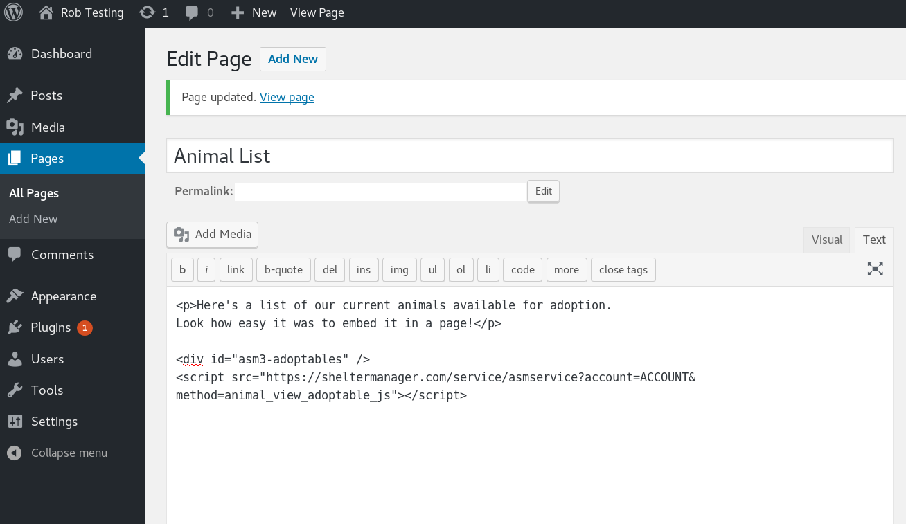

Appendix: Integrating with Your Website¶
ASM offers a number of methods of integrating your adoptable animal data with your website.
Javascript Include¶
The animal_view_adoptable_js method of ASM’s Service API can generate a list of adoptable animal thumbnails for embedding straight into a div container on a page of your website.
Clicking on the thumbnails will call the animal_view method of the Service API for the animal. You can edit the HTML of how that page looks and what information appears on it by editing the animal_view template under
The code snippet required to embed the adoptable animal list in a page on your website looks like this:
<div id="asm3-adoptables" />
<script src="https://service.sheltermanager.com/asmservice?method=animal_view_adoptable_js&account=ACCOUNT"></script>
This example is for sheltermanager.com, substitute your own URL in the script src if you are hosting ASM yourself. Also, if you are using sheltermanager.com, change ACCOUNT in the src for your sheltermanager.com account.
Wordpress¶
To embed your adoptable animals in a Wordpress page, edit the page and add the javascript include snippet shown above where you’d like your adoptable animals to appear on the page:

Dynamic HTML Page¶
ASM can generate dynamic pages of your adoptable animals on demand with the service API. The HTML templates are those used by the regular HTML publisher.
For example, to embed a dynamic page of adoptable animals in an iframe on your website for a sheltermanager.com account:
<iframe src="https://service.sheltermanager.com/asmservice?account=ACCOUNT&method=html_adoptable_animals" width="100%" height="600px"></iframe>
Static HTML Pages (Publisher)¶
ASM can generate a set of static pages from your data with its HTML/FTP Publishing. You can configure it under .
The HTML/FTP publisher constructs the static pages using HTML templates, which you can create under and outputs the pages to a folder of your choice, sending them on to an FTP server of your choice.
Once the site has been created, you can either link directly to it, or embed it on your website with an iframe tag.
Warning
The HTML publisher is no longer available for sheltermanager.com users, use the dynamic HTML page service call outlined above instead.
Service API Data Calls¶
Finally, you can use ASM’s Service API to retrieve the adoptable animal information and images programatically yourself and use that information to construct a site in any way you wish.
More information can be found in the section on the Service API